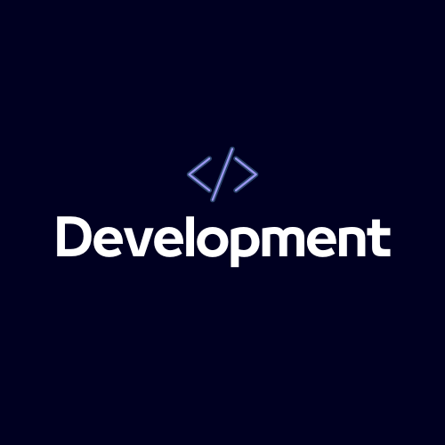

About Me
Hello there! 👋 I'm Tanishq Vyas, a passionate and results-driven web
developer with a knowledge for creating engaging and user-friendly
digital experiences. I blend creativity with technical expertise to
craft seamless, responsive, and visually appealing websites.
As a seasoned web developer, I've successfully delivered a range of
front-end and full-stack projects. From creating intuitive user
interfaces to architecting robust back-end systems, I take pride in
turning ideas into functional and aesthetically pleasing websites. My
skills include proficiency in HTML, CSS, JavaScript, and a variety of
frameworks and libraries, ensuring that every project I undertake
meets the highest standards. Looking forward to experience amazing
corporate culture
